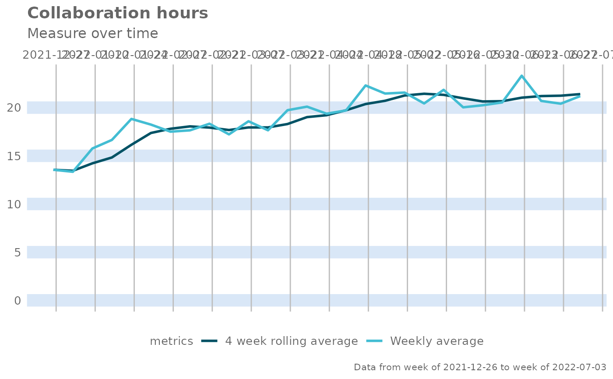

Create a line chart that tracks metrics over time with a 4-week rolling average
Source:R/create_tracking.R
create_tracking.Rd![[Experimental]](figures/lifecycle-experimental.svg)
Create a two-series line chart that visualizes a set of metric over time for the selected population, with one of the series being a four-week rolling average.
Usage
create_tracking(
data,
metric,
plot_title = us_to_space(metric),
plot_subtitle = "Measure over time",
percent = FALSE
)Arguments
- data
A Standard Person Query dataset in the form of a data frame.
- metric
Character string containing the name of the metric, e.g. "Collaboration_hours" percentage signs. Defaults to
FALSE.- plot_title
An option to override plot title.
- plot_subtitle
An option to override plot subtitle.
- percent
Logical value to determine whether to show labels as percentage signs. Defaults to
FALSE.
Value
A different output is returned depending on the value passed to the return argument:
"plot": 'ggplot' object. A time-series plot for the metric."table": data frame. A summary table for the metric.
See also
Other Visualization:
afterhours_dist(),
afterhours_fizz(),
afterhours_line(),
afterhours_rank(),
afterhours_summary(),
afterhours_trend(),
collaboration_area(),
collaboration_dist(),
collaboration_fizz(),
collaboration_line(),
collaboration_rank(),
collaboration_sum(),
collaboration_trend(),
create_bar(),
create_bar_asis(),
create_boxplot(),
create_bubble(),
create_dist(),
create_fizz(),
create_inc(),
create_line(),
create_line_asis(),
create_period_scatter(),
create_rank(),
create_sankey(),
create_scatter(),
create_stacked(),
create_trend(),
email_dist(),
email_fizz(),
email_line(),
email_rank(),
email_summary(),
email_trend(),
external_dist(),
external_fizz(),
external_line(),
external_rank(),
external_sum(),
hr_trend(),
hrvar_count(),
hrvar_trend(),
keymetrics_scan(),
meeting_dist(),
meeting_fizz(),
meeting_line(),
meeting_rank(),
meeting_summary(),
meeting_trend(),
one2one_dist(),
one2one_fizz(),
one2one_freq(),
one2one_line(),
one2one_rank(),
one2one_sum(),
one2one_trend()
Other Flexible:
create_bar(),
create_bar_asis(),
create_boxplot(),
create_bubble(),
create_density(),
create_dist(),
create_fizz(),
create_hist(),
create_inc(),
create_line(),
create_line_asis(),
create_period_scatter(),
create_rank(),
create_sankey(),
create_scatter(),
create_stacked(),
create_trend()
Examples
pq_data %>%
create_tracking(
metric = "Collaboration_hours",
percent = FALSE
)
